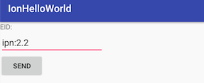
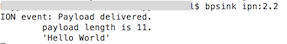

"Hello World"
Note: The entire DtnHelloWorld project can be found at
arch_android/Demo_Applications/IonHelloWorld. Instead of extracting all the code snippets from this tutorial you can simply open/copy it and then continue reading.
Sending
Now that DtnHelloWorld successfully binds and unbinds from the BundleService we can implement the actual transmission of our bundle to the destination EID.
Therefore we have to implement the OnClickListener of our button:
...
// Define 'click' behavior for button
button.setOnClickListener(new View.OnClickListener() {
@Override
public void onClick(View view) {
String payload = "Hello World";
// (1) Check if editText for the destination EID is empty, abort
// in that case
if (editDestEID.getText().toString().isEmpty()) {
Toast.makeText(getApplicationContext(), "Destination " +
"EID " +
"cannot be empty!", Toast
.LENGTH_SHORT).show();
return;
}
// (2) Ensure that the service is actually available
if (mService == null) {
Toast.makeText(getApplicationContext(), "Service not " +
"available!", Toast.LENGTH_LONG).show();
return;
}
try {
// (3) Create a Bundle object that holds all required
// metadata and the payload
DtnBundle b = new DtnBundle(editDestEID.getText()
.toString(),
0,
300,
DtnBundle.Priority.EXPEDITED,
payload.getBytes("UTF-8"));
// (4) Trigger sending of bundle by handing the bundle
// over to the BundleService
mService.sendBundle(b);
}
// (5) Catch error linked to BundleService (i.e. connection
// broke)
catch (RemoteException e) {
Toast.makeText(getApplicationContext(), "Failed to " +
"open endpoint!", Toast
.LENGTH_SHORT).show();
}
// (6) Catch error, when the payload cannot be encoded into
// UTF-8
catch (UnsupportedEncodingException e) {
Log.e(TAG, "onClick: UTF-8 encoding seems not to be " +
"available on this platform");
Toast.makeText(getApplicationContext(), "Failed to send bundle!", Toast
.LENGTH_SHORT).show();
}
}
});
...
In the following, all steps of that listener are explained in detail:
- Within our click handling routine, we first check if the user has entered a destination EID. We could do a sanity check on the entered EID here (i.e. check if a certain format is met), but to keep our application simple we just assume that the user enters a sound EID.
- If we discover that the service is not available, we have to abort.
- The payload that is provided as a string literal is encoded as UTF-8 and is then put into a new
Bundleobject , together with the EID and a Quality-of-Service indicator. - The
Bundleobject ist then handed over to the Bundle service by calling the interface functionsendBundle(Bundle b). - We also abort if the connection to the service was interrupted or the remote function call failed.
- In case that the UTF-8 encoding scheme is not available on the device we abort.
Note: We use the easier direct
ByteArrayencapsulation of the payload in theBundleobject. There is also another handover method available that allows the transmission of larger chunks of data by employing an file descriptor that is shared between app and service. You can find more details in the chapter "Sending Bundles".
Testing
To check that the application is doing what it is supposed to do you can run the app on your Android device (along with the started IonDTN app) and use the testing topology as described in the chapter "IonDTN Setup".Also start ION-DTN on your PC and launch bpsink <sink-eid> with the correct sink EID to receive the bundles from our DtnHelloWorld app.
Note:
If you have used the linked configuration files: android_node.rc (Node 1) & pc_node.rc (Node 2), the available endpoints to test on node 2 are 2.1 and 2.2 (2.0 can not be used because it is for administrative traffic).
Therefore, correct sink id should be ipn:2.1 or ipn:2.2.
For eg. Doing bpsink ipn:2.2 on your PC will begin listening on the sink-EID with the endpoint_number 2 on service_number 2. The sink-EID needs to be same on both PC and android device for sucessfull data transmission. Below is the display screens of both nodes.
 
Congratulations!
The simple DtnHelloWorld app is complete and the messages directed to the EID of your computer should appear in your command shell.